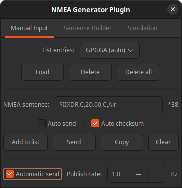
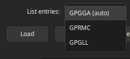
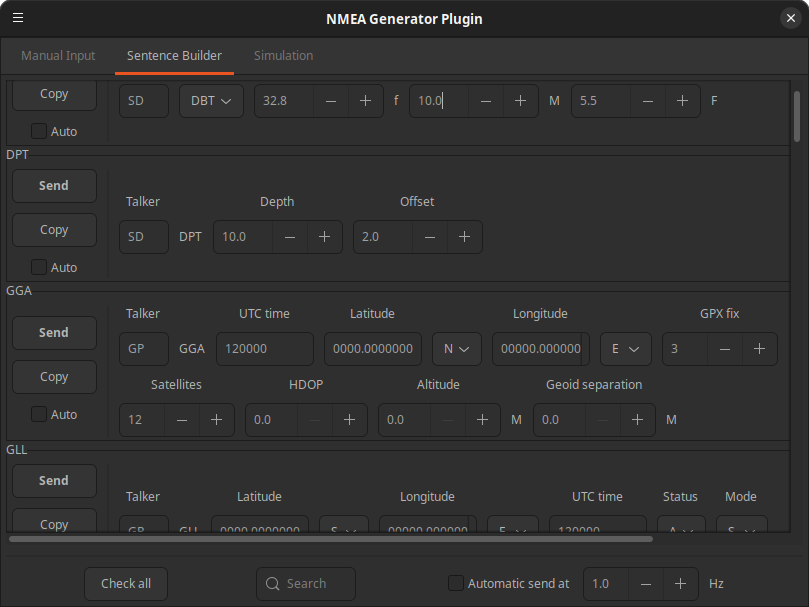
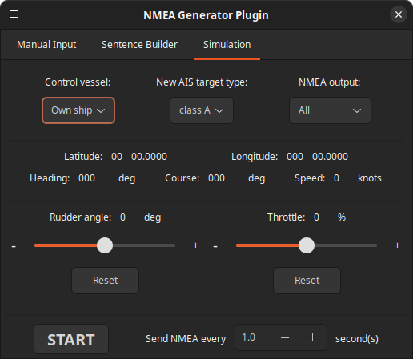
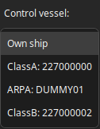
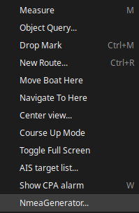
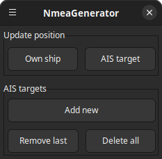
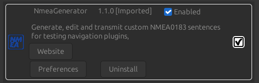
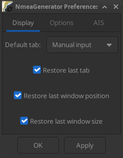
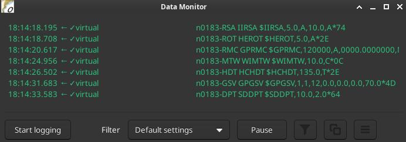

Author
Plugin created by ©Kupofty 2026
Overview
NmeaGenerator is an OpenCPN plugin that generates and transmits NMEA 0183 sentences.
Capabilities
-
Generates standard NMEA 0183 sentences
-
Produces configurable real-time NMEA data streams
-
Simulates own ship navigation (position, speed, course, heading, and turn rate)
-
Simulates multiple AIS targets (Class A, Class B, and ARPA)
-
Sends custom NMEA sentences manually or automatically
-
Builds common NMEA sentences using editable fields
Use Cases
-
Testing OpenCPN with live NMEA data
-
Simulating navigation scenarios
-
Validating dashboards, instruments, and NMEA displays
-
Developing and debugging NMEA-based plugins
-
Simulating GPS, AIS, and other onboard sensors
-
Testing external NMEA-compatible hardware and software
NMEA References
The following resources provide detailed information about NMEA0183 sentence formats, field definitions, units, and AIS message encoding.
Installation
Method 1: Plugin Manager (Recommended)
-
Open OpenCPN
-
Go to Options → Plugins
-
Update catalog and search for the NmeaGenerator plugin
-
Click Install then Enable
Method 2: Manual Install (Cloudsmith)
-
Go to Cloudsmith
-
Select the correct tarball for your OS
-
Download the
.tar.gzarchive (not the.xml) -
Click on Options → Plugins → Import plugin…
-
Enable plugin in Options → Plugins
Method 3: Build from Source (Github)
Clone the repository:
git clone https://github.com/Kupofty/NmeaGenerator_pi.git
Create the build directory:
mkdir build cd build
cmake .. make tarball
cmake .. -A Win32 cmake --build . --config Release --target tarball
Import the tarball in OpenCPN via Options → Plugins → Import plugin… and enable it.
For more information, see the INSTALL.md file in the GitHub repository.
User Interface
To open the plugin, click on the toolbar icon :
The plugin is divided into multiple tabs.
Manual Input
The Manual Input tab lets you type and send any NMEA sentence directly to OpenCPN. It is useful for testing individual sentences independently of the simulation engine, as well as validating or debugging NMEA data flows.
The input is only checked to ensure the sentence begins with $ or !. No other validation is performed. The checksum is optional.

Controls
-
Add to list: Adds the current sentence to the list so it can be saved, loaded, or included in automatic sending. The input field is cleared.
-
Send: Sends the current sentence once to OpenCPN.
-
Copy: Copies the current sentence, including the checksum if present or automatically generated, to the clipboard.
-
Clear: Clears the input field.
-
Automatic send: Continuously sends the selected sentences at the configured frequency. The transmission rate can be changed at any time.
Automatic Send
Each sentence in the list has an Auto send checkbox. Only sentences with this option enabled are transmitted when the Automatic send option at the bottom of the window is enabled.
During each transmission cycle, the application iterates through the list and sends only the entries marked for automatic transmission.
Checksum
The Auto checksum option calculates and appends the correct checksum automatically before sending.
When enabled, you can paste a sentence that already contains a checksum. The existing checksum is ignored and replaced with the newly calculated one, making it easy to compare the two visually.
When disabled, a status indicator below the input field reports whether the checksum is: Missing / Valid / Invalid
List
The list displays all saved NMEA sentences.

Entries marked with (auto) are included in automatic transmission when Automatic send is enabled. Other entries can be loaded back into the input field for editing or sent manually.
Individual entries can be removed, or the entire list can be cleared using the available buttons.
Each list entry is named using the first five characters of the NMEA sentence, excluding the leading $ or ! character.
Sentence Builder
The Sentence Builder tab provides quick access to the most commonly used NMEA sentences through editable fields.

Multiple sentences can be configured and transmitted automatically at the same time.
Use the search box to filter sentences by their ID, and the vertical scrollbar to browse the complete list.
For text input fields, values must follow the official NMEA format to ensure they are interpreted correctly by OpenCPN or compatible hardware and software.
Controls
-
Send: Sends the selected sentence once to OpenCPN.
-
Copy: Copies the complete sentence to the clipboard.
-
Auto: Includes the sentence in the automatic send list.
-
Check all: Enables or disables automatic sending for all sentences.
-
Automatic send: Continuously sends all sentences marked with Auto at the configured frequency. This option must be enabled for automatic transmission to occur.
Simulation

The Simulation tab generates continuous NMEA data streams to simulate own ship and one or more AIS targets.
Vessel Selection and Data Output
-
Control vessel: Selects the vessel currently controlled by the throttle and rudder sliders. The list always contains the own ship and any created AIS targets. Vessels that are not currently selected continue moving using their last speed and rudder settings.
-
AIS type: Sets the new AIS target type: Class A, Class B, or ARPA radar target.
-
NMEA output: Selects which data is transmitted:
-
All: Sends NMEA data forown ship and all AIS targets.
-
Own ship only: Sends NMEA data for own ship only.
-
AIS targets only: Sends NMEA data for AIS targets only.
-
Vessel Controls
-
Position: Right-click on the map to move the selected vessel to the cursor position.
-
Throttle: Adjusts the vessel speed.
-
Rudder angle: Adjusts the vessel turn rate.
-
Reset: Returns the throttle or rudder control to zero.
Simulation
The status fields in the center of the tab (position, heading, COG, and speed) display the live data of the vessel currently selected in Control vessel.
-
START/STOP: Starts or stops the simulation. Data is transmitted continuously at the configured frequency.
Selecting a Vessel
Clicking the Control vessel drop-down displays all controllable vessels: the own ship and every AIS target that has been created.

Selecting a vessel makes it the active vessel, allowing its speed and rudder angle to be controlled with the sliders.
Context Menu
Right-click anywhere on the map and select NmeaGenerator….

The context menu provides quick simulation actions:
-
Update position: Move the own ship or the currently selected AIS target to the cursor position.
-
AIS targets: Create a new AIS target at the cursor position, delete the last created AIS target, or remove all AIS targets.

|
When you click Delete Last AIS Target or Remove All AIS Targets, the selected AIS target is removed from the simulator’s internal list and its NMEA messages are no longer transmitted. If the target is still visible on the chart, it is because OpenCPN retains lost AIS targets for a configurable period. To make deleted targets disappear immediately, open Options → Ships → AIS Targets and set the following parameters to 0 min:
With both values set to 0 min, the target is removed from the chart as soon as OpenCPN stops receiving its NMEA messages. |
Settings
The plugin can be accessed via Options → Plugins → NmeaGenerator in the OpenCPN toolbar.

Click on "Preferences" to open the settings window.
Remember to click "OK" or "Apply" before closing to save any changes.
Display

| Default tab |
Tab opened by default when the plugin window is launched (only applies if Restore last tab is disabled). |
| Restore last tab |
Reopens the last active tab when launching the plugin, overriding the default tab setting. |
| Restore last window position |
Restores the plugin window to its last position before it was closed. |
| Restore last window size |
Restores the plugin window to its last size before it was closed. |
Notes
Connections
-
NMEA sentences are sent to OpenCPN’s internal data bus. They will be received by any plugin or instrument listening on that bus, including Dashboard, AIS display or third-party plugins.
-
The plugin does not create a serial or network output by default. To forward sentences to external software or hardware, use OpenCPN’s connection settings to create an output connection.
General
-
Outputs from the Manual Input, Sentence Builder, and Simulation tabs can be used simultaneously. For example, ship simulation can run while the Sentence Builder automatically transmits selected sentences, and additional sentences are sent automatically or manually from the Manual Input tab.
-
Multiple NMEA sources may cause conflicts in OpenCPN. Ensure that generated data does not overlap with data from real sensors or other NMEA sources.
-
Do not use this plugin for real navigation. Generated data may interfere with navigation information and affect system reliability.
-
Automatic transmissions from the Manual Input, Sentence Builder, and Simulation tabs stop when the plugin window is closed, unless Keep transmitting when window is closed is enabled in Settings.
-
Output can be monitored in the OpenCPN Data Monitor window. Plugin-generated sentences are prefixed with the virtual tag, making them easy to identify.

-
When simulating AIS targets, ensure that the configured MMSI does not match that of a real vessel to avoid confusion in AIS displays.
-
Sentence fields left empty or containing invalid values may be ignored or interpreted unexpectedly by receiving software or instruments. Refer to the NMEA specifications when necessary.